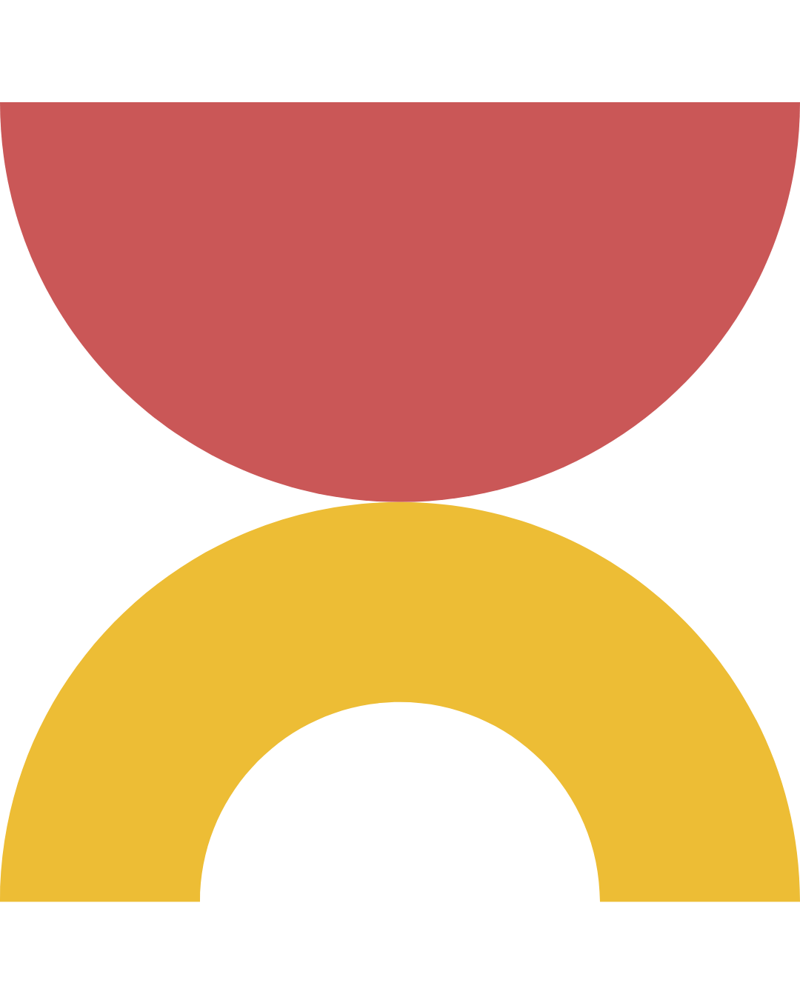
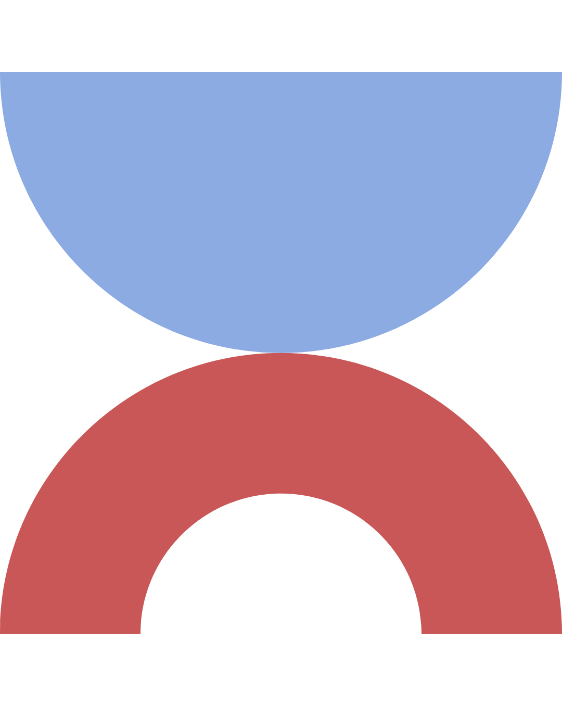
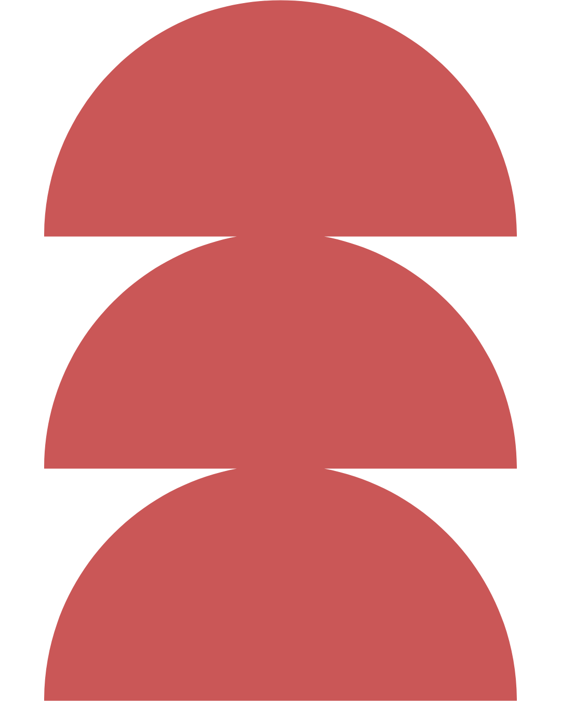

Psi a Todo existe para cuidar, pensar y acompañar: a quienes consultan y a quienes ejercen.

Psi a Todo es una marca reflexiva, contenida y sensible. Se posiciona desde la presencia y el acompañamiento, no desde la respuesta inmediata ni la autoridad. Su identidad es densa, pausada y conceptual: habilita el tiempo de pensar, de sentir y de elaborar.

Muchas personas postergan el inicio de su terapia por miedo a elegir mal o llegan cansadas de probar espacios que no funcionaron. Cuando la elección queda librada a un listado impersonal o a una recomendación suelta, a veces se termina abandonando.
Nuestra derivación es una decisión clínica para que tu proceso empiece en las mejores condiciones y pueda sostenerse. Leemos en profundidad cada motivo de consulta y situación particular: es lo que hace que el porcentaje de personas que necesita cambiar de profesional luego de nuestra derivación sea sumamente bajo.
Recibir orientación de Psi a Todo no tiene costo. Solo abonás la sesión con el/la terapeuta. Y si el factor económico es una barrera, también podemos contactarte con profesionales principiantes de nuestra red que trabajan con aranceles reducidos, bajo la misma supervisión clínica y el mismo criterio de derivación.
Ambas modalidades están disponibles porque entendemos que para algunos procesos la presencialidad tiene un valor clínico propio. Nuestra red incluye perfiles formados en distintos enfoques, escuelas y especialidades.
No hace falta estar en una crisis para consultar. A veces sentís que algo se repite o simplemente sabés que algo no está bien, aunque todavía cueste ponerlo en palabras.
Completás nuestro formulario detallando lo que buscás, tu disponibilidad y honorarios posibles. Toda la información es confidencial y es leída únicamente por nuestro equipo clínico.
Un equipo clínico evalúa tu situación de forma singular. No somos un algoritmo: cada derivación es una decisión pensada.
Te contactamos a través de WhatsApp en menos de 24 horas hábiles para confirmar tu solicitud y orientarte.
El profesional se comunica con vos para coordinar un día y horario y así comenzar con el tratamiento.

Completá el formulario y nos contactamos en menos de 24 hs hábiles.
Necesito orientación